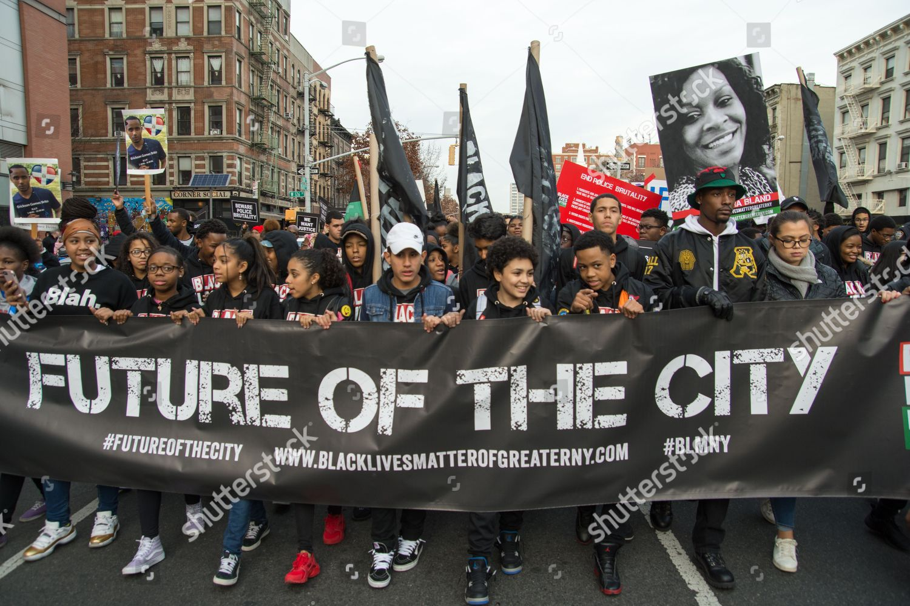
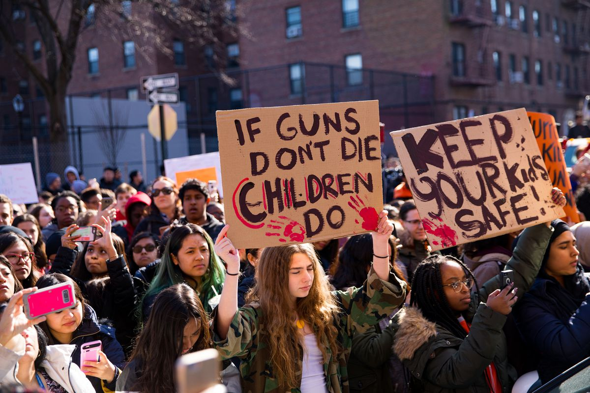
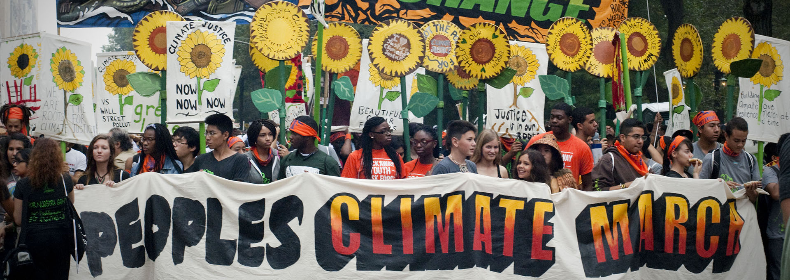

Youth Led Movement
The Rise of Youth Led Movements
 The youth-led climate movement followed in the wake of the Black Lives Matter and March for Our Lives movements, which re-demonstrated to the world what “kids” are capable of. Many of the people involved in these movements are students who can’t yet vote, and so are in a lot of ways excluded from this democracy. Unlike adults, teenagers haven’t lived through much of the complicated narrative of climate change, and so they still have a sense of hope around the issue. They’re not quite as entrenched in the norms of society, so they can still see beyond to a better future. Also, in the context of the climate crisis, the younger you are, the more you will be affected by global warming. So people can sympathize with our generation, or see their kids in it. To have the future of our species fighting for their survival sends a very powerful message to the world
Intersectionality
The rise of a new climate justice movement, rather than just an environmental movement is key because it includes all the communities that have been excluded from environmental movements of the past. It’s especially important for this movement because the people that are most affected are often traditionally marginalized communites already.